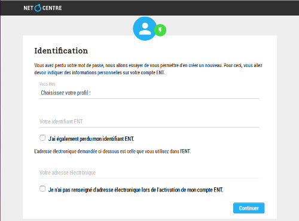

Il arrive fréquemment qu'un utilisateur oublie
son mot de passe, voire son identifiant ENT. L'ENT propose un
dispositif qui permet de se recréer un mot de passe, après s'être
assuré de l'identité de l'utilisateur.
Lors de l'
activation
de son compte ENT, pour prévenir la perte de mot de passe
l'utilisateur a normalement renseigné des informations qui pourront
lui servir à le recréer. Il a notamment dû indiquer une adresse
électronique de secours ou donner des réponses à des questions
secrètes.
Identification
de l'utilisateur
Lors de la demande "Mot de passe oublié ?" à partir de la page de
connexion à l'ENT, une page s'affiche qui permettra à l'utilisateur
de fournir des informations qui doivent permettre de l'identifier :

Dans les cas les plus favorables, il faut indiquer :
- son profil
- son identifiant ENT
- son adresse électronique de secours, renseignée lors de l'activation
du compte ENT et sur laquelle un lien de recréation du
mot de passe sera envoyé.
Si l'utilisateur a également oublié son
identifiant ENT, il pourra fournir des informations sur son
établissement et sur son identité en cochant la case "
J'ai
également perdu mon identifiant ENT".
Si l'utilisateur n'a pas renseigné d'adresse électronique externe à
l'ENT lors de l'
activation
de son compte ENT, il pourra cocher la case "
Je
n'ai pas renseigné d'adresse électronique lors de l'activation de
mon compte ENT". Dans ce cas, il pourra
répondre
aux questions secrètes qu'il a renseignées lors de l'
activation de son compte ENT.
Si ce formulaire ne peut pas être renseigné, l'utilisateur devra
s'adresser à son correspondant ENT dans son établissement de
rattachement.
Utilisation
d'une adresse électronique de secours
L'utilisation d'une adresse électronique de secours, externe à
l'ENTs est la façon la plus simple de recréer son mot de passe
oublié. Une fois le formulaire renseigné, un courriel est envoyé sur
cette adresse.
Un lien se trouve dans le corps du courriel. Il suffit de cliquer
dessus pour saisir un nouveau mot de passe qui sera effectif sans
délai pour la connexion à l'ENT.
Attention ! si vous ne
recevez pas de courriel sur votre adresse de secours, il se peut
que celui-ci ait été détecté comme indésirable (spam) et soit donc
présent à tort dans la liste de vos courriers indésirables...
Utilisation
des réponses données aux questions secrètes
Certains utilisateurs ne souhaitent pas indiquer d'adresse
électronique de secours. Dans ce cas, la procédure d'activation
de compte ENT propose de choisir 2 questions secrètes et d'y
donner des réponses personnalisées.
L'utilisateur qui a oublié son mot de passe et qui coche la case
"Je n'ai pas renseigné d'adresse
électronique lors de l'activation de mon compte ENT" se
voit proposer les questions secrètes qu'il a choisies lors de l'activation
de son compte. En donnant les réponses à ces questions
secrètes, l'utilisateur pourra se créer un nouveau mot de passe.